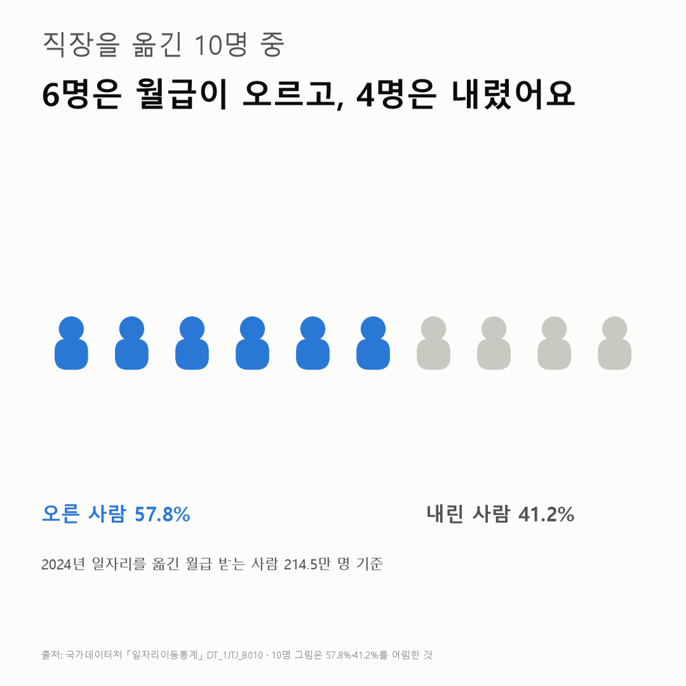
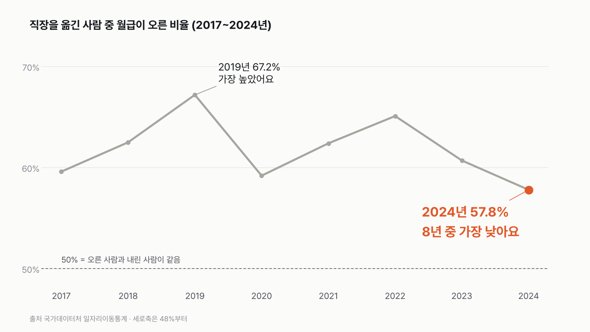

이직하면 월급이 오를까요? 8년 중 가장 덜 올랐어요
직장을 옮긴 사람 다섯 중 둘은 월급이 내렸어요. 오른 사람이 더 많긴 해도 그 차이는 8년 중 가장 작았어요.

- 2024년 직장을 옮긴 월급 받는 사람 중 57.8%는 월급이 올랐고, 41.2%는 내렸어요.
- 오른 사람 비율 57.8%는 2017년 이후 8년 중 가장 낮아요. 가장 높던 2019년엔 67.2%였어요.
- 젊을수록 오른 사람이 많아요. 15~29세는 63.1%, 60세 이상은 52.4%예요.
연말이 다가오면 연봉 협상과 이직 얘기가 부쩍 많아지죠. 옮기면 월급이 오른다는 말도 늘 따라붙어요. 그래서 실제로 옮긴 사람들 기록을 열어 봤어요. 2024년에 일자리를 옮긴 월급 받는 사람은 214만 5천 명. 이 중 57.8%는 월급이 올랐고 41.2%는 내렸어요. 다섯 중 둘은 내린 거예요.
해마다 놓고 보니 2024년은 8년 중 오른 사람이 가장 적은 해였어요. 내린 사람 41.2%는 8년 중 가장 많았고요. 오른 비율은 2019년 67.2%가 가장 높았고, 2023년부터 내려와 57.8%까지 왔어요.

나이가 많을수록 반반에 가까워져요. 15~29세는 63.1%가 올랐어요. 30대 61.4%, 40대 57.7%, 50대 53.7%, 60세 이상 52.4%. 15~29세가 가장 높은 건 8년 내내 같았어요.
옮기기 전 월급으로 나눠 보면 더 크게 갈려요. 월 100만 원이 안 되던 사람은 83.0%가 올랐어요. 500만 원 이상이던 사람은 37.9%. 물론 원래 높았던 값은 다음 해에 평균 쪽으로 돌아오기 쉬워서, 이 차이를 '연봉 높은 사람은 이직하면 손해'로 읽기는 어려워요.

2024년 중소기업에서 옮긴 사람 중 대기업으로 간 사람은 11.8%예요. 15~29세는 16.3%로 조금 더 많아요.
같은 회사에 남은 사람의 월급은 얼마나 올랐을까요. 그 숫자가 옆에 있어야 57.8%를 제대로 읽을 수 있을 텐데, 공개된 표에선 찾지 못했어요.
이 숫자는 어디서 왔나요
출처
어떻게 셌나요
- 설문이 아니에요. 4대 보험 같은 행정 기록에 일자리가 등록된 사람을 세는 통계예요.
- 어느 해의 일자리와 다음 해 일자리를 견주어, 옮긴 사람을 월급이 오른 사람·내린 사람·같은 사람으로 나눠요. 모두 1년 안에 옮긴 경우만 셌어요.
- 오른 비율은 오른 사람을 세 무리를 합한 수로 나눈 값이에요. 내린 비율도 같은 수로 나눴어요. 보도는 전체 합계(총계)로 나눠서 내린 비율이 41.3%이고, 이 글은 41.2%예요.
- 중소기업에서 대기업으로 간 비율은 중소기업에서 옮긴 사람 가운데서 셌어요.
- 인원이 천 명 단위라 합계가 1~2천 명씩 어긋날 수 있어요.
한계 7가지
이 데이터로 말할 수 없는 것
- 옮기지 않은 사람과 비교할 수 없어요. 같은 회사에 남은 사람의 임금도 올라요. 그래서 이직자의 57.8%가 올랐다는 것만으로 "이직이 유리하다"고 말할 수 없어요. 일자리이동통계 공개표에는 같은 회사에 남은 사람(유지자, 2024년 1,892만 명)의 수만 있고 임금 변화는 없어요. 다른 공개 통계(소득이동통계, 일자리행정통계 소득)도 남은 사람과 옮긴 사람을 나눠 보여주지 않아요(2026-10-29 확인). 비교하려면 마이크로데이터(개인 단위 원자료) 이용 신청이 필요해요.
- 오른 폭은 몰라요. 이 표는 올랐는지 내렸는지(방향)만 알려줘요. 얼마나 올랐는지는 없어요.
- 스스로 옮긴 경우만 있는 게 아니에요. 해고, 계약 만료, 폐업 같은 비자발적 이동이 섞여 있어요. 50대 이상의 낮은 비율에는 이런 이동이 영향을 줬을 수 있어요(확인되지 않음).
- 대상과 임금의 정의예요. KOSIS 표 주석에 따르면 대상은 일용직과 특수형태 근로자를 뺀 상시 임금근로자예요. 임금은 행정자료에 있는 임금 소득자료만으로 집계해요. "임금수준"이 월평균인지 같은 세부 계산 방식은 통계설명자료로 더 확인해야 해요.
- 15~29세가 한 묶음이에요. 20대만 따로 볼 수 없어요.
- 천 명 단위예요. 작은 구간은 반올림 영향이 커요.
- 원인은 말하지 않아요. 경기, 업종, 직무 변화와의 관계는 이 데이터로 확인할 수 없어요.
새 글 나오면 받아 보기
피드 리더 앱에 이 사이트 주소를 한 번 넣어 두면, 새 글이 올라올 때 앱에 떠요. 가입이나 메일 주소는 필요 없어요.
받는 법 보기
- 피드 리더 앱을 하나 골라요. 새 글을 모아 보여 주는 앱이에요. 예를 들면 Feedly나 Inoreader가 있어요. 둘 다 무료고 웹·휴대폰에서 써요.
- 앱에서 '구독 추가'(+)를 누르고 아래 주소를 붙여 넣어요.
- 끝이에요. 새 글이 올라오면 앱 목록에 떠요.
https://protofu.github.io/opendata-insight/feed.xmlFeedly를 쓴다면 여기를 눌러 바로 추가할 수도 있어요.